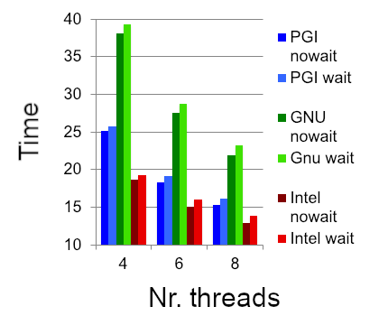
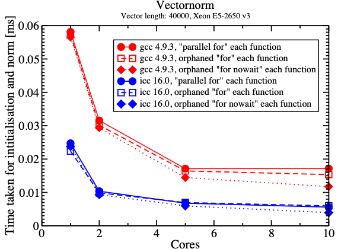

More on Worksharing
Objectives
This guide covers advanced worksharing concepts:
singleandmasterconstructsifclause for conditional parallelizationFlushes and implicit barriers
nowaitclause for removing barriersOrphan directives
Work for Single Threads
The single Construct
The single construct is a worksharing construct placed inside a parallel
region. Exactly one thread, not necessarily thread 0, executes its block.
The executing thread is not specified.
Other threads wait at an implicit barrier at the end, unless
nowaitis used.It is useful for operations that should be performed only once: updating shared metadata, performing one I/O operation, or creating tasks.
Example: initializing a shared value once
#pragma omp parallel shared(a, b, n)
{
#pragma omp single
{
a = omp_get_num_threads();
} // implicit barrier
#pragma omp for
for (int i = 0; i < n; i++)
b[i] = a;
}
!$omp parallel shared(a, b, n) private(i)
!$omp single
a = omp_get_num_threads()
!$omp end single ! implicit barrier
!$omp do
do i = 1, n
b(i) = a
end do
!$omp end parallel
Note
The implicit barrier after single ensures that a has been set
before threads enter the following worksharing loop. Do not add nowait
here without another suitable synchronization mechanism.
The master and masked Constructs
Unlike single, master assigns the work to the primary thread
(thread 0) and has no implicit barrier. This avoids the barrier overhead
when synchronization is unnecessary. master is deprecated as of OpenMP
5.1; masked without a filter clause is its modern counterpart.
#pragma omp parallel
{
#pragma omp masked
{
/* Executed by the primary thread only. */
}
/* No implicit barrier after masked. */
}
Older OpenMP code may instead use #pragma omp master.
!$omp parallel
!$omp masked
! Executed by the primary thread only.
!$omp end masked
! No implicit barrier after masked.
!$omp end parallel
Older OpenMP code may instead use !$omp master / !$omp end master.
Note
The masked examples require a compiler supporting OpenMP 5.1 or later.
Keep master if your HPC compiler only implements an older version.
The ordered Construct
An ordered region enforces sequential iteration order for a portion of
an otherwise parallel loop. The enclosing worksharing loop needs an
ordered clause. The expensive calculation can run in parallel, while
output is produced in the original iteration order. In this simple form,
there must not be more than one ordered region associated with each loop
iteration.
Warning
Ordering can be expensive. Use it only for the part of the computation that truly must follow the iteration order.
Example: ordered output from a parallel calculation
#pragma omp parallel for ordered schedule(dynamic, 1)
for (int i = 0; i < PSIZE; i++) {
b[i] = expensiveFunction(i);
#pragma omp ordered
{
printf("b[%3i] = %4i\n", i, b[i]);
}
}
!$omp parallel do ordered schedule(dynamic, 1)
do i = 1, PSIZE
b(i) = expensiveFunction(i)
!$omp ordered
print *, "b(", i, ") = ", b(i)
!$omp end ordered
end do
!$omp end parallel do
The calls to expensiveFunction can execute concurrently; the print
statements execute in increasing iteration order. ordered is not a
substitute for protecting arbitrary shared-variable updates.
Clauses for the Parallel Construct
The if Clause
The if clause controls whether a parallel construct uses multiple
threads. If the expression evaluates to false, the parallel region is
serialized and executes with one thread. This is useful when a workload
is too small to benefit from parallel execution.
int n = 20;
#pragma omp parallel if (n > 5) shared(n)
{
#pragma omp single
printf("The n is %i\n", n);
printf("Hello, I am thread %i of %i\n",
omp_get_thread_num(), omp_get_num_threads());
}
integer :: n = 20
!$omp parallel if (n > 5) shared(n)
!$omp single
print *, "The n is:", n
!$omp end single
print *, "Hello, I am thread", omp_get_thread_num(), &
"of", omp_get_num_threads()
!$omp end parallel
If
n > 5, the runtime may use multiple threads.If
n <= 5, the region executes using a single thread.
The num_threads Clause
The num_threads clause requests a team size for a particular parallel
region; the actual number can also depend on runtime limits and settings.
It takes precedence over the environment’s default request for that region.
int nthread = 3;
#pragma omp parallel num_threads(nthread)
{
/* Work performed by the team. */
}
integer :: nthread = 3
!$omp parallel num_threads(nthread)
! Work performed by the team.
!$omp end parallel
Keeping Memory Consistent
The OpenMP Memory Model
OpenMP has a relaxed-consistency memory model. A thread may have a temporary view of shared variables, and access to shared memory may be reordered within the constraints of the memory model. Correct communication between threads requires suitable synchronization, such as barriers, critical regions, locks, or atomics with appropriate memory ordering.
Important
Do not assume that a value written by one thread is immediately visible
to another. A plain flush is not a general substitute for mutual
exclusion or an ordering protocol.
Potential race with overlapping array updates
int b[4] = {3, 4, 5, 6};
#pragma omp parallel num_threads(3) shared(b)
{
int i = omp_get_thread_num(); // 0, 1, 2
b[i] = b[i] + (i + 1);
b[i+1] = b[i+1] + 1; // overlaps another thread
}
integer :: b(4) = [3, 4, 5, 6]
integer :: i
!$omp parallel num_threads(3) shared(b) private(i)
i = omp_get_thread_num() + 1 ! 1, 2, 3
b(i) = b(i) + i
b(i+1) = b(i+1) + 1 ! overlaps another thread
!$omp end parallel
This is a data race: one thread may be modifying b(i+1) while another
modifies that same element. Merely flushing memory would not make the
compound updates atomic.
Solution for this example: a barrier between two non-overlapping phases
int b[4] = {3, 4, 5, 6};
#pragma omp parallel num_threads(3) shared(b)
{
int i = omp_get_thread_num();
b[i] = b[i] + (i + 1);
#pragma omp barrier
b[i+1] = b[i+1] + 1;
}
integer :: b(4) = [3, 4, 5, 6]
integer :: i
!$omp parallel num_threads(3) shared(b) private(i)
i = omp_get_thread_num() + 1
b(i) = b(i) + i
!$omp barrier
b(i+1) = b(i+1) + 1
!$omp end parallel
For exactly three threads, the phases are:
Initial: [3, 4, 5, 6]
After phase 1 (before barrier): [4, 6, 8, 6]
After phase 2: [4, 7, 9, 7]
Note
The barrier ensures that all updates in phase 1 complete before phase 2 begins. Within each phase, different threads write distinct elements. This particular indexing assumes exactly three threads.
Ensuring Memory Consistency: flush
A flush participates in establishing consistency between threads’
views of memory. A release/acquire synchronization relationship, or an
appropriate synchronization construct, is needed for reliable publication
of a value between threads. The usual communication sequence is: the
producer writes, the producer performs a release operation, the consumer
performs a synchronizing acquire operation, and the consumer reads the
published data. In practice, prefer a barrier or an atomic protocol over
hand-written spin loops with explicit flushes.
Explicit flush syntax
#pragma omp flush
!$omp flush
Ordered publication using release/acquire atomics (OpenMP 5.0+)
The following alternatives demonstrate a writer publishing a[4] /
a(5) and a reader waiting for a notification flag. An atomic write
with release followed by a corresponding atomic read with acquire
orders the data access across the two threads.
double a[5] = {0};
int matrix_set = 0;
#pragma omp parallel num_threads(2) shared(a, matrix_set)
{
if (omp_get_thread_num() == 0) {
a[4] = 3.0;
#pragma omp atomic write release
matrix_set = 1;
} else {
int seen = 0;
while (!seen) {
#pragma omp atomic read acquire
seen = matrix_set;
}
printf("a[4] = %g\n", a[4]);
}
}
real :: a(5)
integer :: matrix_set, seen
a = 0.0
matrix_set = 0
!$omp parallel num_threads(2) shared(a, matrix_set) private(seen)
if (omp_get_thread_num() == 0) then
a(5) = 3.0
!$omp atomic write release
matrix_set = 1
else
seen = 0
do while (seen == 0)
!$omp atomic read acquire
seen = matrix_set
end do
print *, "a(5) =", a(5)
end if
!$omp end parallel
Implicit Synchronization
OpenMP includes synchronization and associated memory-consistency effects at many constructs, for example:
The end of a
parallelregion has an implicit barrier.barrieris an explicit team synchronization point.Worksharing
for/do,sections,single, and Fortranworksharenormally have an implicit barrier at the end, unlessnowaitremoves it.criticalcoordinates mutually exclusive entry and exit.atomiccoordinates access to the specified storage location; memory-order clauses determine further ordering guarantees.
The deprecated master construct and the corresponding masked
construct have no implicit barrier on exit.
Clause: nowait
Implicit barriers can add overhead when threads do not need to wait for one
another. nowait removes the implicit barrier at the end of an eligible
worksharing construct, but it must not violate dependencies between work
performed by different threads.
Add nowait to the worksharing directive:
#pragma omp for nowait
for (int i = 0; i < n; i++)
a[i] = funcA(i);
Put nowait on the corresponding end directive:
!$omp do
do i = 1, n
a(i) = funcA(i)
end do
!$omp end do nowait
Example: producing two vectors before using both
#pragma omp parallel shared(a, b, t, n)
{
#pragma omp for nowait
for (int i = 0; i < n; i++)
a[i] = sin((double)i);
#pragma omp for
for (int i = 0; i < n; i++)
b[i] = cos((double)i); // implicit barrier
#pragma omp for
for (int i = 0; i < n; i++)
t[i] = a[i] + b[i];
}
!$omp parallel shared(a, b, t, n)
!$omp do
do i = 1, n
a(i) = sin(real(i))
end do
!$omp end do nowait
!$omp do
do i = 1, n
b(i) = cos(real(i))
end do
!$omp end do ! implicit barrier
!$omp do
do i = 1, n
t(i) = a(i) + b(i)
end do
!$omp end parallel
The first loop initializes a without a barrier. The second loop
initializes b and has a barrier, which ensures that both preceding
loops have completed before the third loop uses their results. Combining
these operations in one loop would often be faster; this is a demonstration
of synchronization rather than a performance recommendation.
Example: tensor product, with the dependency synchronized
#pragma omp parallel shared(a, b, t, n, m)
{
#pragma omp for nowait
for (int i = 0; i < n; i++)
a[i] = funcA(i);
#pragma omp for
for (int j = 0; j < m; j++)
b[j] = funcB(j); // barrier synchronizes both arrays
#pragma omp for
for (int i = 0; i < n; i++)
for (int j = 0; j < m; j++)
t[i][j] = a[i] * b[j];
}
!$omp parallel shared(a, b, t, n, m)
!$omp do
do i = 1, n
a(i) = funcA(i)
end do
!$omp end do nowait
!$omp do
do j = 1, m
b(j) = funcB(j)
end do
!$omp end do ! synchronizes both arrays
!$omp do
do j = 1, m
do i = 1, n
t(i,j) = a(i) * b(j)
end do
end do
!$omp end parallel
Performance Impact of nowait
The original training benchmark used a dual-socket, quad-core Intel Xeon
E5520 (2.26 GHz) with PGI 10.9, GCC 4.4, and Intel 12.0. It measured
vector addition with n = 1000 and 4, 6, or 8 threads.
Threads Reported savings from nowait
4--8 0.6--1.3 microseconds


Note
These numbers are historical, platform-specific results, not general performance guarantees. Even small improvements can matter in loops executed very frequently.
Specialty of schedule(static)
For multiple worksharing loops associated with the same parallel region, matching iteration counts, compatible bounds, and identical static schedules (including chunk size) can assign corresponding logical iterations to the same threads. Under these conditions, later loops can consume values written by the same threads without an intervening worksharing barrier.
Important
This depends on the prescribed static-iteration mapping. Do not apply
it to dynamic or guided scheduling, or when iteration spaces
or scheduling parameters differ. A loop still needs the appropriate
synchronization for other dependencies.
Example: corresponding iterations handled by the same thread
#pragma omp parallel shared(a, b, t, n)
{
#pragma omp for schedule(static) nowait
for (int i = 0; i < n; i++)
a[i] = sin((double)i);
#pragma omp for schedule(static) nowait
for (int i = 0; i < n; i++)
b[i] = cos((double)i);
#pragma omp for schedule(static)
for (int i = 0; i < n; i++)
t[i] = a[i] + b[i];
}
!$omp parallel shared(a, b, t, n)
!$omp do schedule(static)
do i = 1, n
a(i) = sin(real(i))
end do
!$omp end do nowait
!$omp do schedule(static)
do i = 1, n
b(i) = cos(real(i))
end do
!$omp end do nowait
!$omp do schedule(static)
do i = 1, n
t(i) = a(i) + b(i)
end do
!$omp end parallel
In each loop, the same thread handles a given index. For example,
under the specified equal static schedules, a thread responsible for
index i in the first loop is responsible for that same index in the
second and third loops. Therefore its read of a and b occurs
after its own writes to those elements. The
final implicit barrier at the end of the parallel region still applies.
Orphan Directives
An orphan directive is an OpenMP directive in a called function or
subroutine, rather than lexically inside the parallel region. Such a
directive can bind to the active parallel region in which it is called.
Procedures called by the team must be thread-safe, and all the threads
required by a worksharing or barrier construct must encounter it in a
compatible order.
Example: a routine with an orphaned worksharing loop
Main function (illustrative excerpt):
double v[8];
#pragma omp parallel shared(v)
{
vectorinit(v, 8);
}
Called function:
void vectorinit(double *vdata, int leng)
{
#pragma omp for
for (int i = 0; i < leng; i++)
vdata[i] = (double)i;
}
Main program (illustrative excerpt):
double precision :: v(8)
!$omp parallel shared(v)
call vectorinit(v, size(v))
!$omp end parallel
Called subroutine:
subroutine vectorinit(vdata, leng)
integer, intent(in) :: leng
double precision, intent(inout) :: vdata(leng)
integer :: i
!$omp do
do i = 1, leng
vdata(i) = dble(i - 1)
end do
!$omp end do
end subroutine vectorinit
Note
Every thread calls the routine, but its orphaned for/do
distributes the loop across the team. The examples set the vector to
values 0 through 7.
Performance Impact of Orphaning
The original benchmark compared vector initialization and norm calculation for a vector of length 40,000, on a Xeon E5-2650 v3 using GCC 4.9.3 and ICC 16.0. It compared:
Starting a separate parallel region in each routine.
Using orphaned
for/doin a longer parallel region.Using orphaned worksharing loops with
nowaitwhere safe.


The reported benchmark favored reusing one long parallel region, with additional savings from removing unnecessary barriers.
Discussion of Orphan Directives
Advantages
Existing functions can be parallelized without rewriting every call site.
Longer parallel regions avoid repeated team setup costs.
Reducing barriers can improve performance when dependencies allow it.
Potential pitfalls
Warning
A routine containing orphan directives may behave differently when called from serial code. For example, its worksharing construct can run with a single thread, and a barrier inside it must be encountered consistently by the expected team. Document the required calling context, and design/test serial and parallel usage deliberately.
Exercise
Inspect and run the following code where an orphan directive is used in func1
1// On cluster Kebnekaise
2// ml foss
3// export OMP_NUM_THREADS=1
4// gcc -O3 -march=native -fopenmp -o test.x 4-static-orphaned-openmp.c -lm
5#include <stdio.h>
6#ifdef _OPENMP
7#include <omp.h>
8#endif
9
10int func1(int var2)
11{
12int i;
13var2 = 0;
14
15for ( int i = 0; i < 10; i++)
16#pragma omp atomic update
17 var2 += 1;
18
19return var2;
20}
21
22int main()
23{
24
25int i,var1,var2;
26var1 = 0;
27
28// Static extent
29
30#pragma omp parallel
31 {
32
33#ifdef _OPENMP
34#pragma omp for reduction(+:var1)
35 for ( int i = 0; i < 10; i++)
36 var1 += 1;
37
38#else
39 printf("Serial code!\n");
40#endif
41 }
42
43 printf("Static version: var1 = %i \n", var1);
44
45// Dynamic extent
46int result = 0;
47#pragma omp parallel reduction(+:result)
48 {
49 result += func1(var2);
50#ifdef _OPENMP
51#else
52 printf("Serial code!\n");
53#endif
54 }
55
56 printf("Dynamic version: result = %i \n", result);
57
58return 0;
59}
Summary
This guide covered advanced worksharing concepts in OpenMP:
Constructs
single construct: Execute code on one thread (with barrier)
master construct: Execute code on master thread (no barrier)
ordered construct: Execute loop iterations in sequential order
Clauses
if clause: Conditional parallelization
num_threads clause: Control thread count
nowait clause: Remove implicit barriers for performance
Memory Consistency
flush: Ensure memory consistency across threads
Implicit barriers and flushes: Automatic synchronization points
Memory reordering: Understanding and preventing issues
Advanced Techniques
Static schedule specialty: Using nowait with dependencies
Orphan directives: Worksharing constructs in called functions
Performance Considerations
Balance between synchronization overhead and correctness
Strategic use of
nowaitcan improve performanceOrphan directives reduce parallel region overhead